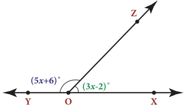

Miscellaneous Practice Problems Miscellaneous Practice Problems
- The sum of three numbers is 58. The second number is three times of two-fifth of the first number and the third number is 6 less than the first number. Find the three numbers.
- In triangle ABC, the measure of \(\angle B\) is two-third of the measure of \(\angle A\). The measure of \(\angle C\) is \(20 ^{\circ}\) more than the measure of \(\angle A\). Find the measures of the three angles.
- Two equal sides of an isosceles triangle are \(5y - 2\) and 4y+9 units. The third side is 2y+5 units. Find ῾y᾿ and the perimeter of the triangle.
- In the given figure, angle XOZ and angle ZOY form a

linear pair. Find the value of x.
- Draw a graph for the following data:

Does the graph represent a linear relation?
Challenging ProblemsChallenging Problems
- Three consecutive integers, when taken in increasing order and multiplied by 2, 3 and 4 respectively, total up to 74. Find the three numbers.
- 331 students went on a field trip. Six buses were filled to capacity and 7 students had to travel in a van. How many students were there in each bus?
- A mobile vendor has 22 items, some which are pencils and others are ball pens. On a particular day, he is able to sell the pencils and ball pens. Pencils are sold for ₹15 each and ball pens are sold at ₹20 each. If the total sale amount with the vendor is ₹380, how many pencils did he sell?
- Draw the graph of the lines \(y = x\), \(y = 2x\), \(y = 3x\) and \(y = 5x\) on the same graph sheet. Is there anything special that you find in these graphs?
- Consider the number of angles of a convex polygon and the number of sides of that polygon.
Tabulate as follows:

Use this to draw a graph illustrating the relationship between the number of angles and the number of sides of a polygon.